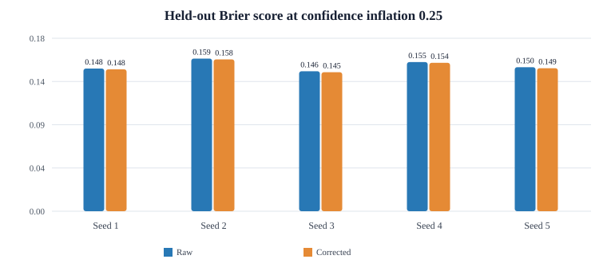

Experiment · Agentic AI · Confidence calibration
Confidence inflation: can a simple correction improve calibration?
A synthetic held-out evaluation tests a simple confidence correction when agents systematically overstate certainty.
By Muzammal Hussain · 24 October 2026 · Synthetic research
Confidence-weighted decisions can become misleading when reported confidence is systematically too high. This experiment estimates an additive confidence gap on a separate calibration sample, then evaluates the correction on held-out scenarios. It tests a simple baseline—not a universal calibration method. No real LLMs were called.
Key findings
- At inflation 0.25, corrected Brier scores were lower in all five reported seeds. The absolute changes were small.
- Accuracy did not change between raw and corrected methods within each seed and inflation level.
- ECE did not improve consistently across inflation levels, so the correction cannot be described as uniformly better calibrated.
- The test is synthetic: the correction is estimated from a separate calibration sample and evaluated on held-out scenarios.
Experimental design
Three simulated agents have nominal skills 0.80, 0.70 and 0.62. Each run uses a calibration sample of 1,000 scenarios and a held-out test sample of 2,000. Five seeds were used for the reported run. The tested confidence-inflation levels are 0, 0.05, 0.10, 0.15, 0.20 and 0.25. The correction estimates the mean reported-confidence minus correctness gap from calibration data and applies a simple additive adjustment.
Held-out results at inflation 0.25

| Seed | Accuracy | Raw Brier | Corrected Brier | Absolute Brier reduction |
|---|---|---|---|---|
| 1 | 80.35% | 0.14844 | 0.14763 | 0.00081 |
| 2 | 78.25% | 0.15881 | 0.15799 | 0.00082 |
| 3 | 79.90% | 0.14566 | 0.14469 | 0.00097 |
| 4 | 78.75% | 0.15523 | 0.15444 | 0.00079 |
| 5 | 79.50% | 0.14986 | 0.14883 | 0.00103 |
Accuracy for the five seeds was 80.35%, 78.25%, 79.90%, 78.75% and 79.50%, respectively. It was unchanged by the correction within each seed. The table reports the supplied held-out Brier values at inflation 0.25; it does not imply that every inflation level benefits.
Interpretation
The correction improved Brier score slightly in all five reported seeds at the highest tested inflation level. This is encouraging for this simulator, but a lower Brier score at one setting does not prove that the method is generally calibrated. ECE results varied by inflation level, and accuracy did not change.
Limitations
The agents and scenarios are synthetic, the correction is deliberately simple, and only five seeds are reported here. The estimated confidence gap may not transfer to a different model, task, language or deployment distribution. Calibration should be evaluated on representative held-out data, with uncertainty estimates and comparison to stronger baselines.
Reproducibility and next steps
The experiment is implemented in Python using the standard library. The repository includes the experiment runner and tests. A next step is to report full per-level ECE and Brier results with more seeds, then compare the additive correction with established calibration baselines.